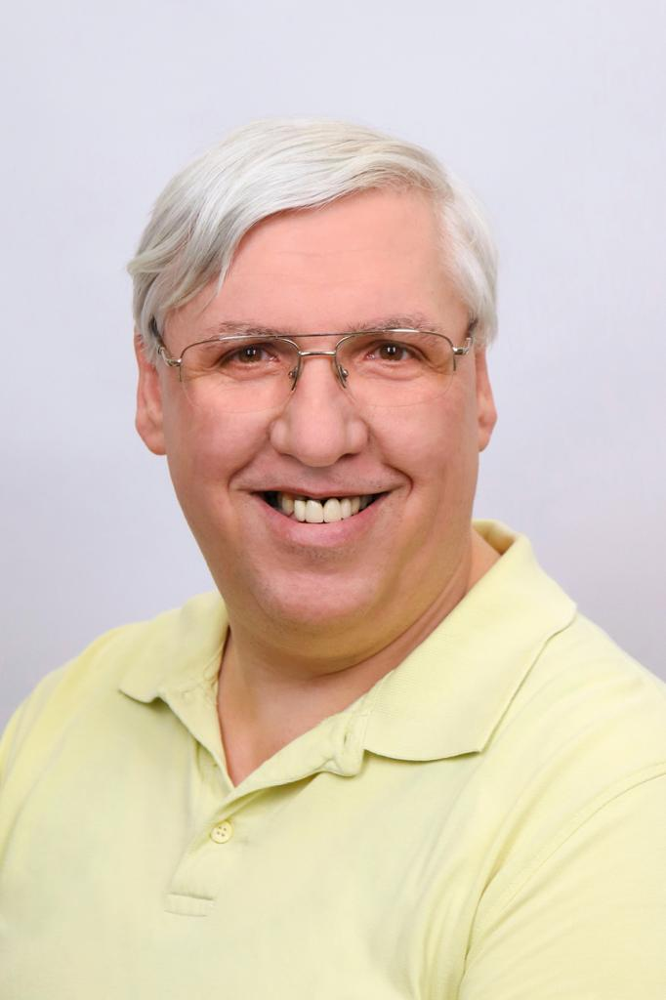
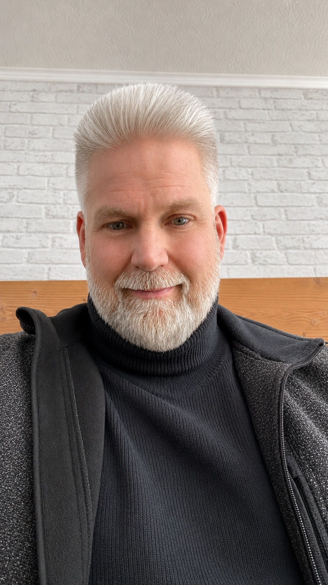

Wer sind wir?
Wir sind die Kreisvereinigung der Freien Wähler Dithmarschen. Unser Anspruch ist eine sachorientierte, bürgernahe Politik, die regionale Erfahrungen ernst nimmt und unterschiedliche Perspektiven zusammenbringt.
Wir sind die Kreisvereinigung der Freien Wähler in Dithmarschen. Hier erfährst du, wer wir sind, was uns antreibt und wie du mit uns über die Zukunft unserer Region ins Gespräch kommen kannst.
Politik muss verständlich sein. Deshalb wollen wir transparent zeigen, wofür unsere Kreisvereinigung steht, welche Themen uns beschäftigen und wie Bürgerinnen und Bürger sich beteiligen können.
Wir sind die Kreisvereinigung der Freien Wähler Dithmarschen. Unser Anspruch ist eine sachorientierte, bürgernahe Politik, die regionale Erfahrungen ernst nimmt und unterschiedliche Perspektiven zusammenbringt.
Für unabhängiges Denken, nachvollziehbare Entscheidungen, starke Gemeinden und einen offenen Dialog. Unsere konkreten politischen Positionen sollen transparent dargestellt und an den Herausforderungen vor Ort ausgerichtet werden.
Weil die Zukunft unserer Region nicht von allein entsteht. Wir möchten Probleme frühzeitig ansprechen, Ideen entwickeln und dazu beitragen, dass Entscheidungen die Lebensrealität der Menschen in Dithmarschen berücksichtigen.
Unser Blick richtet sich auf den gesamten Kreis Dithmarschen: auf Städte, Gemeinden, den ländlichen Raum, die Küste und die Menschen, die unsere Region prägen. Über unsere Arbeit und Aktivitäten informieren wir auf dieser Website.
Mit einer Frage, einer Idee, einem Gespräch oder deinem persönlichen Engagement. Du musst nicht bereits politisch aktiv sein, um den ersten Schritt zu machen.
Komm mit uns ins GesprächGute Politik beginnt mit konkreten Fragen. Diese Themenfelder zeigen, womit wir uns beschäftigen. Konkrete Positionen und Forderungen werden von der Kreisvereinigung abgestimmt.
Lebenswerte Orte, handlungsfähige Kommunen und Entscheidungen, die vor Ort nachvollziehbar sind.
Unsere Landschaft und heimischen Arten schützen sowie Natur- und Artenschutz in der Region sichtbar machen.
Gute Rahmenbedingungen für Familien, Vereine, Ehrenamt und das tägliche Leben in den Gemeinden.
Regionale Ideen aufgreifen, Chancen nutzen und Lösungen entwickeln, die langfristig tragfähig sind.
Hier stellen wir die Verantwortlichen der Kreisvereinigung vor. Du findest ihre Funktionen und kannst über die offiziellen Kontaktdaten mit der Kreisvereinigung ins Gespräch kommen.

Vorsitz der Kreisvereinigung

Stellvertretender Vorsitz

Finanzen der Kreisvereinigung
Schriftführung der Kreisvereinigung
Sitzungen, Gespräche, Veranstaltungen und öffentliche Termine: Hier informieren wir über bestätigte Möglichkeiten, die Kreisvereinigung persönlich kennenzulernen.
Sobald neue öffentliche Termine feststehen, werden sie hier veröffentlicht.
Du möchtest ein Thema ansprechen, hast eine Frage zur Arbeit der Kreisvereinigung oder interessierst dich für eine Mitarbeit? Schreib uns. Ein offener Austausch ist der Anfang.
Du hast Fragen, Anregungen oder möchtest dich engagieren? Wir freuen uns auf den Austausch.
E-Mail:
kv-dithmarschen@sh.freiewaehler.eu
Telefon:
0160 4214488
Postanschrift:
Freie Wähler – Kreisvereinigung Dithmarschen
Torfweg 12
25795 Weddingstedt
Instagram:
@freiewaehler_dithmarschen